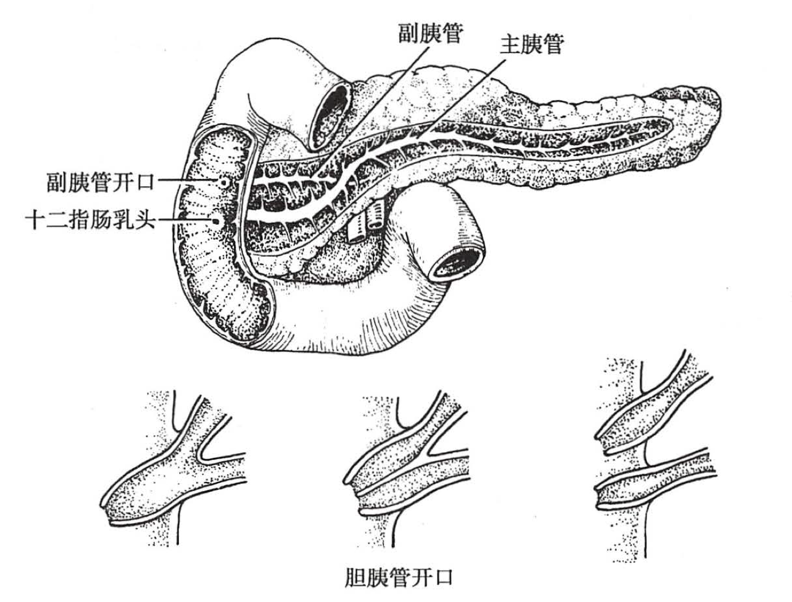

<!doctype html>
<html lang="zh">


<head>
    <meta charset="UTF-8">
    <meta name="viewport"
        content="width=device-width, user-scalable=no, initial-scale=1.0, maximum-scale=1.0, minimum-scale=1.0">
    <meta http-equiv="X-UA-Compatible" content="ie=edge">
    <title>41.胰腺疾病</title>
    
    <link rel="stylesheet" href="https://cdn.jsdelivr.net/npm/vditor/dist/index.css" />
    

    

    
    <script src="./../../assets/front-end-lib/all_components.js"></script>
    
        
        
        


    

    <link rel="stylesheet" href="./../../assets/js_css/theme.css">
    <link rel="stylesheet" href="./../../assets/js_css/github-markdown-css.css">
</head>


<main id="static_app_llej" class="markdown-body">
    <main title="41.胰腺疾病" updated="20211113141430" data-type="NodeDocument" data-n-id="20211112160916-neemcz7" updated="20211113183800" data-n-id="20211112160916-neemcz7"><h1 title="41.胰腺疾病" updated="20211113141430" data-type="NodeDocument" data-n-id="20211112160916-neemcz7" updated="20211113183800" data-n-id="20211112160916-neemcz7">41.胰腺疾病</h1>
<ol start="0" updated="20211113141430" data-type="NodeList" data-n-id="20211112160916-5hv91ll">
<li data-type="NodeListItem" data-n-id="20211112160931-iov302m"><span class="ListItemDot">1.</span>
<h1 id="解剖生理概要" updated="20211113011919" data-type="NodeHeading" data-n-id="20211112160931-t8xe087">解剖生理概要<a id="vditorAnchor-解剖生理概要" class="vditor-anchor" href="#解剖生理概要"></a></h1>
<ol start="0" data-type="NodeList" data-n-id="20211113011919-flh8ryg">
<li data-type="NodeListItem" data-n-id="20211113011919-1d78r14"><span class="ListItemDot">1.</span>
<p updated="20211113011954" data-type="NodeParagraph" data-n-id="20211113011919-lka233n">胰腺大部分位于腹膜后，胰尾是膜腺左端的部分，有<strong style="color: var(--b3-font-color12);" data-type="NodeStrong">腹膜包绕</strong>是其重要解剖标志</p>
</li>
<li data-type="NodeListItem" data-n-id="20211113011955-jcyclmr"><span class="ListItemDot">2.</span>
<p updated="20211113012013" data-type="NodeParagraph" data-n-id="20211113011955-grx4nyb">胰管</p>
<ul start="0" data-type="NodeList" data-n-id="20211113012447-s0940ro">
<li data-type="NodeListItem" data-n-id="20211113012017-l1vaz06"><span class="ListItemDot"></span>
<p updated="20211113012210" data-type="NodeParagraph" data-n-id="20211113012017-lk1woms">主胰管（Wirsung 管）：主胰管与胆总管汇合形成“共同通道”，其膨大部分称 <strong style="color: var(--b3-font-color12);" data-type="NodeStrong">Vater 壶腹</strong>，壶腹周围有 <strong style="color: var(--b3-font-color12);" data-type="NodeStrong">Oddi 括约肌</strong>包绕，末端通常开口于十二指肠乳头</p>
</li>
</ul>
<ul start="0" updated="20211113012017" data-type="NodeList" data-n-id="20211113012014-5qqw3ee">
<li data-type="NodeListItem" data-n-id="20211113012226-owldy56"><span class="ListItemDot"></span>
<p updated="20211113012412" data-type="NodeParagraph" data-n-id="20211113012226-5qeio82">副胰管（Santorini 管）：在胰头部主胰管上方，通常与主胰管相连，引流胰头前上部的胰液，开口于<strong style="color: var(--b3-font-color12);" data-type="NodeStrong">十二指肠副乳头</strong></p>
</li>
</ul>
<p updated="20211113012439" data-type="NodeParagraph" data-n-id="20211113012434-490vxqj"><span class="img" style="display: inline-block;width: 488px;" style="max-width: 498px;"></span></p>
</li>
<li data-type="NodeListItem" data-n-id="20211113012454-ovsb5uv"><span class="ListItemDot">3.</span>
<p updated="20211113012558" data-type="NodeParagraph" data-n-id="20211113012454-06a1fi6">胰腺受交感神经和副交感神经的双重支配</p>
<ul start="0" updated="20211113012559" data-type="NodeList" data-n-id="20211113012558-oqcb1un">
<li data-type="NodeListItem" data-n-id="20211113012559-mvg3v05"><span class="ListItemDot"></span>
<p updated="20211113012604" data-type="NodeParagraph" data-n-id="20211113012559-cejlnj5">交感神经是疼痛的主要通路</p>
</li>
<li data-type="NodeListItem" data-n-id="20211113012601-dhqdi42"><span class="ListItemDot"></span>
<p updated="20211113012614" data-type="NodeParagraph" data-n-id="20211113012601-d6azwjr">副交感神经传出纤维对胰岛、腺泡和导管起调节作用</p>
</li>
</ul>
</li>
<li data-type="NodeListItem" data-n-id="20211113012542-cph78nt"><span class="ListItemDot">4.</span>
<p updated="20211113012637" data-type="NodeParagraph" data-n-id="20211113012542-qtob4mo">胰腺具有外分泌和内分泌两种功能</p>
<ul start="0" updated="20211113012639" data-type="NodeList" data-n-id="20211113012630-jzf9g9u">
<li data-type="NodeListItem" data-n-id="20211113012639-mm7081n"><span class="ListItemDot"></span>
<p updated="20211113012916" data-type="NodeParagraph" data-n-id="20211113012639-chxcxi4">外分泌为胰液（消化酶、水、碳酸氢盐）</p>
</li>
<li data-type="NodeListItem" data-n-id="20211113012714-m30y1mw"><span class="ListItemDot"></span>
<p updated="20211113013427" data-type="NodeParagraph" data-n-id="20211113012714-gj1dyv1">内分泌来源于<strong style="color: var(--b3-font-color12);" data-type="NodeStrong">胰岛</strong>（胰岛分泌激素如下）</p>
<table updated="20211113013409" data-type="NodeTable" data-n-id="20211113013005-5fl9o0t">
<thead>
<tr>
<th>细胞</th>
<th>分泌激素</th>
</tr>
</thead>
<tbody>
<tr>
<td>β(B)</td>
<td>胰岛素--<strong style="color: var(--b3-font-color8);" data-type="NodeStrong">主要</strong><br /></td>
</tr>
<tr>
<td>α(A)</td>
<td>胰高血糖素</td>
</tr>
<tr>
<td>δ(D)<br /></td>
<td>生长抑素</td>
</tr>
<tr>
<td>PP</td>
<td>胰多肽</td>
</tr>
<tr>
<td>D1</td>
<td>血管活性肠肽(VIP）</td>
</tr>
</tbody>
</table>
</li>
</ul>
</li>
</ol>
</li>
<li updated="20211113141430" data-type="NodeListItem" data-n-id="20211113013431-y9kwl76"><span class="ListItemDot">2.</span>
<h1 id="胰腺炎" updated="20211113013521" data-type="NodeHeading" data-n-id="20211113013431-x9o4za0">胰腺炎<a id="vditorAnchor-胰腺炎" class="vditor-anchor" href="#胰腺炎"></a></h1>
<ol start="0" updated="20211113141430" data-type="NodeList" data-n-id="20211113013522-sxzm10j">
<li data-type="NodeListItem" data-n-id="20211113013522-u7g9wbl"><span class="ListItemDot">1.</span>
<h2 id="急性胰腺炎" updated="20211113013528" data-type="NodeHeading" data-n-id="20211113013522-mrn0h4t">急性胰腺炎<a id="vditorAnchor-急性胰腺炎" class="vditor-anchor" href="#急性胰腺炎"></a></h2>
<ol start="0" data-type="NodeList" data-n-id="20211113013529-ttoaiob">
<li data-type="NodeListItem" data-n-id="20211113013529-edrmblj"><span class="ListItemDot">1.</span>
<p updated="20211113130203" data-type="NodeParagraph" data-n-id="20211113013529-ddtxwl8">致病危险因素</p>
<ol start="0" data-type="NodeList" data-n-id="20211113130204-34f35qf">
<li data-type="NodeListItem" data-n-id="20211113130204-vrw4fh2"><span class="ListItemDot">1.</span>
<p updated="20211113140503" data-type="NodeParagraph" data-n-id="20211113130204-o9mf26z"><strong style="color: var(--b3-font-color8);" data-type="NodeStrong">胆道疾病</strong>：占 50% 以上，称<strong style="color: var(--b3-font-color11);" data-type="NodeStrong">胆源性胰腺炎</strong>。结石可阻塞胆总管末端，此时胆汁可经“共同通道”反流入胰管</p>
</li>
<li data-type="NodeListItem" data-n-id="20211113130246-h1qcq4f"><span class="ListItemDot">2.</span>
<p updated="20211113130418" data-type="NodeParagraph" data-n-id="20211113130246-41r47d8">饮酒：① 直接损伤胰腺 ② 刺激胰液分泌 ③ 引起十二指肠乳头水肿 和 Oddi 括约肌痉挛。其结果造成胰管内压力增高，胰管破裂</p>
</li>
<li data-type="NodeListItem" data-n-id="20211113130422-uetiiit"><span class="ListItemDot">3.</span>
<p updated="20211113130447" data-type="NodeParagraph" data-n-id="20211113130422-t82fy4t">代谢性疾病：高脂血症、高钙血症（甲状旁腺功能亢进）</p>
</li>
<li data-type="NodeListItem" data-n-id="20211113130448-ghxr5r9"><span class="ListItemDot">4.</span>
<p updated="20211113130453" data-type="NodeParagraph" data-n-id="20211113130448-wod1lwz">十二指肠液反流</p>
</li>
<li data-type="NodeListItem" data-n-id="20211113130453-ieschkj"><span class="ListItemDot">5.</span>
<p updated="20211113130518" data-type="NodeParagraph" data-n-id="20211113130453-awi4z6n">医源性因素：内镜逆行胰胆管造影（ERCP）</p>
</li>
<li data-type="NodeListItem" data-n-id="20211113130519-bin5fpx"><span class="ListItemDot">6.</span>
<p updated="20211113130537" data-type="NodeParagraph" data-n-id="20211113130519-l0hndt9">肿瘤：导致胰管梗阻</p>
</li>
<li data-type="NodeListItem" data-n-id="20211113130537-9w43nvq"><span class="ListItemDot">7.</span>
<p updated="20211113130722" data-type="NodeParagraph" data-n-id="20211113130537-kzi9v4r">药物：5-氨基水杨酸、硫唑嘌呤、6-巯(qiú)嘌呤</p>
</li>
<li data-type="NodeListItem" data-n-id="20211113130724-tnvdnc8"><span class="ListItemDot">8.</span>
<p updated="20211113130729" data-type="NodeParagraph" data-n-id="20211113130724-r5y4q5h">创伤</p>
</li>
<li data-type="NodeListItem" data-n-id="20211113130739-qk9nvry"><span class="ListItemDot">9.</span>
<p updated="20211113130742" data-type="NodeParagraph" data-n-id="20211113130739-1ot90oe">胰腺血液循环障碍</p>
</li>
</ol>
</li>
<li data-type="NodeListItem" data-n-id="20211113130744-02ha6sd"><span class="ListItemDot">2.</span>
<p updated="20211113130814" data-type="NodeParagraph" data-n-id="20211113130744-63dm7js">发病机制：急性胰腺炎是<strong style="color: var(--b3-font-color12);" data-type="NodeStrong">腺泡内膜酶异常激活</strong>的结果</p>
</li>
<li data-type="NodeListItem" data-n-id="20211113130816-cnv6jzl"><span class="ListItemDot">3.</span>
<p updated="20211113130828" data-type="NodeParagraph" data-n-id="20211113130816-jui37k8">病理</p>
<ul start="0" updated="20211113130827" data-type="NodeList" data-n-id="20211113130825-yg2be0t">
<li data-type="NodeListItem" data-n-id="20211113130827-u4b99xh"><span class="ListItemDot"></span>
<p updated="20211113130833" data-type="NodeParagraph" data-n-id="20211113130827-0u23791">基本病理改变是胰腺呈不同程度的水肿、充血、出血和坏死</p>
</li>
</ul>
<table updated="20211113131411" data-type="NodeTable" data-n-id="20211113130842-zx40ywz">
<thead>
<tr>
<th><br /></th>
<th>急性水肿性胰腺炎<br /></th>
<th>急性出血坏死性胰腺炎<br /></th>
</tr>
</thead>
<tbody>
<tr>
<td>一般情况</td>
<td>病变轻，多局限在体尾部</td>
<td>以胰腺实质<strong style="color: var(--b3-font-color12);" data-type="NodeStrong">出血、坏死</strong>为特征</td>
</tr>
<tr>
<td>大体</td>
<td>肿胀变硬，充血，被膜紧张</td>
<td>肿胀， 呈暗紫色， 分叶结构模糊，坏死灶呈<strong style="color: var(--b3-font-color12);" data-type="NodeStrong">灰黑色</strong></td>
</tr>
<tr>
<td>腹腔</td>
<td>大网膜可见散在粟粒状或斑块状的<strong style="color: var(--b3-font-color12);" data-type="NodeStrong">黄白色皂化斑</strong>(脂肪酸钙)，腹水为淡黄色</td>
<td>可见皂化斑和脂肪坏死灶，周围广泛组织坏死，腹腔有<strong style="color: var(--b3-font-color12);" data-type="NodeStrong">咖啡色或暗红色血性液体</strong></td>
</tr>
<tr>
<td>镜下</td>
<td>间质<strong style="color: var(--b3-font-color8);" data-type="NodeStrong">充血、水肿</strong>并有炎性细胞浸润</td>
<td>脂肪坏死和腺泡破坏，腺泡小叶结构模糊不清。 间质小血管壁<strong style="color: var(--b3-font-color8);" data-type="NodeStrong">坏死</strong>（片状<strong style="color: var(--b3-font-color8);" data-type="NodeStrong">出血</strong>）</td>
</tr>
</tbody>
</table>
</li>
<li data-type="NodeListItem" data-n-id="20211113131421-xz5yega"><span class="ListItemDot">4.</span>
<p updated="20211113131433" data-type="NodeParagraph" data-n-id="20211113131421-szum1f4">临床表现</p>
<ol start="0" data-type="NodeList" data-n-id="20211113131434-oimi7e4">
<li data-type="NodeListItem" data-n-id="20211113131433-0izangq"><span class="ListItemDot">1.</span>
<p updated="20211113131610" data-type="NodeParagraph" data-n-id="20211113131433-yu8wafv">腹痛：主要症状</p>
<ul start="0" updated="20211113131611" data-type="NodeList" data-n-id="20211113131610-awgshjw">
<li data-type="NodeListItem" data-n-id="20211113131611-iauj3x8"><span class="ListItemDot"></span>
<p updated="20211113131620" data-type="NodeParagraph" data-n-id="20211113131611-oq7ys7m">常于饱餐和饮酒后突然发作，腹痛剧烈</p>
</li>
<li data-type="NodeListItem" data-n-id="20211113131621-091yd5f"><span class="ListItemDot"></span>
<p updated="20211113131642" data-type="NodeParagraph" data-n-id="20211113131621-h1etd3z">多位于<strong style="color: var(--b3-font-color12);" data-type="NodeStrong">左上腹</strong>，向左肩及左腰背部放射，胆源性者腹痛始发于右上腹 ，逐渐向左侧转移</p>
</li>
</ul>
</li>
<li data-type="NodeListItem" data-n-id="20211113131651-hwy8nux"><span class="ListItemDot">2.</span>
<p updated="20211113131657" data-type="NodeParagraph" data-n-id="20211113131651-3vjjsr2">腹胀</p>
<ul start="0" updated="20211113131705" data-type="NodeList" data-n-id="20211113131705-ph53a48">
<li data-type="NodeListItem" data-n-id="20211113131705-df3jnhv"><span class="ListItemDot"></span>
<p updated="20211113131815" data-type="NodeParagraph" data-n-id="20211113131705-bx2arz5"><strong style="color: var(--b3-font-color12);" data-type="NodeStrong">腹腔神经丛</strong>受剌激引起<strong style="color: var(--b3-font-color8);" data-type="NodeStrong">肠麻痹</strong>（病人排气、排便停止）的结果</p>
</li>
<li data-type="NodeListItem" data-n-id="20211113131712-i7ykegd"><span class="ListItemDot"></span>
<p updated="20211113131744" data-type="NodeParagraph" data-n-id="20211113131712-n3vucgx">腹膜后炎症越严重，腹胀越明显，腹腔积液时可加重腹胀</p>
</li>
<li data-type="NodeListItem" data-n-id="20211113131747-n5dyrrb"><span class="ListItemDot"></span>
<p updated="20211113135706" data-type="NodeParagraph" data-n-id="20211113131747-7p2cx16"><strong style="color: var(--b3-font-color11);" data-type="NodeStrong">腹腔间隔室综合征</strong>：由于不同因素导致腹腔内压非生理性、进行性、急剧升高，引起腹腔内器官和相关的腹外器官系统功能损害的一种临床综合征</p>
</li>
</ul>
</li>
<li data-type="NodeListItem" data-n-id="20211113131805-fau3di3"><span class="ListItemDot">3.</span>
<p updated="20211113131829" data-type="NodeParagraph" data-n-id="20211113131805-emecf8b">恶心、呕吐</p>
<ul start="0" updated="20211113131830" data-type="NodeList" data-n-id="20211113131829-2m820zq">
<li data-type="NodeListItem" data-n-id="20211113131830-7yvq0ts"><span class="ListItemDot"></span>
<p updated="20211113131849" data-type="NodeParagraph" data-n-id="20211113131830-99yteax">早期即出现，往往<strong style="color: var(--b3-font-color12);" data-type="NodeStrong">剧烈而频繁</strong></p>
</li>
<li data-type="NodeListItem" data-n-id="20211113131850-f7men78"><span class="ListItemDot"></span>
<p updated="20211113131858" data-type="NodeParagraph" data-n-id="20211113131850-jh4170s">呕吐物为胃十二指肠内容物</p>
</li>
<li data-type="NodeListItem" data-n-id="20211113131859-p5byck8"><span class="ListItemDot"></span>
<p updated="20211113131903" data-type="NodeParagraph" data-n-id="20211113131859-vnm74sy">呕吐后腹痛不缓解</p>
</li>
</ul>
</li>
<li data-type="NodeListItem" data-n-id="20211113131904-iwnmj1b"><span class="ListItemDot">4.</span>
<p updated="20211113131957" data-type="NodeParagraph" data-n-id="20211113131904-3noaii9">腹膜炎体征：重症急性膜腺炎腹部压痛明显，可伴有肌紧张和反跳痛，范围较广，可累及全腹</p>
</li>
<li data-type="NodeListItem" data-n-id="20211113131959-oimsemc"><span class="ListItemDot">5.</span>
<p updated="20211113132123" data-type="NodeParagraph" data-n-id="20211113131959-v5qvrik">少数严重病人胰腺的出血可经腹膜后途径渗入皮下，在<strong style="color: var(--b3-font-color12);" data-type="NodeStrong">腰部、季肋部和下腹部</strong>皮肤出现大片青紫色淤斑，称 <strong style="color: var(--b3-font-color11);" data-type="NodeStrong">Grey-Turner 征</strong>；若出现在<strong style="color: var(--b3-font-color12);" data-type="NodeStrong">脐周</strong>，称 <strong style="color: var(--b3-font-color11);" data-type="NodeStrong">Cullen 征</strong></p>
</li>
<li data-type="NodeListItem" data-n-id="20211113132137-u97o473"><span class="ListItemDot">6.</span>
<p updated="20211113132143" data-type="NodeParagraph" data-n-id="20211113132137-gtz31t5">伴随症状</p>
<ul start="0" updated="20211113132144" data-type="NodeList" data-n-id="20211113132143-l7qmdoh">
<li data-type="NodeListItem" data-n-id="20211113132144-wxpe8az"><span class="ListItemDot"></span>
<p updated="20211113132315" data-type="NodeParagraph" data-n-id="20211113132144-odntajo">合并胆道感染常伴寒战、高热，胰腺坏死时呈<strong style="color: var(--b3-font-color12);" data-type="NodeStrong">持续性高热</strong></p>
</li>
<li data-type="NodeListItem" data-n-id="20211113132206-u157jps"><span class="ListItemDot"></span>
<p updated="20211113132341" data-type="NodeParagraph" data-n-id="20211113132206-cvpe51y">合并胆道结石嵌顿或肿大胰头压迫胆总管可出现黄疸</p>
</li>
<li data-type="NodeListItem" data-n-id="20211113132341-xu9rbeh"><span class="ListItemDot"></span>
<p updated="20211113132359" data-type="NodeParagraph" data-n-id="20211113132341-dcs24au">重症胰腺炎病人可有脉搏细速、血压下降，乃至休克</p>
</li>
</ul>
</li>
</ol>
</li>
<li data-type="NodeListItem" data-n-id="20211113132408-6ugvoal"><span class="ListItemDot">5.</span>
<p updated="20211113132435" data-type="NodeParagraph" data-n-id="20211113132408-80tx1eh">诊断</p>
<ol start="0" data-type="NodeList" data-n-id="20211113132440-3d02kz1">
<li data-type="NodeListItem" data-n-id="20211113132435-6rj9p46"><span class="ListItemDot">1.</span>
<p updated="20211113132449" data-type="NodeParagraph" data-n-id="20211113132435-2235sl7">实验室检查</p>
<ul start="0" updated="20211113132450" data-type="NodeList" data-n-id="20211113132450-hjx35nq">
<li data-type="NodeListItem" data-n-id="20211113132450-24p88k4"><span class="ListItemDot"></span>
<p updated="20211113132613" data-type="NodeParagraph" data-n-id="20211113132450-suk7du5">胰酶：血清淀粉酶在发病数小时开始升高，4～5 天恢复正常；尿淀粉酶在 24 小时才开始升高，1～2 周恢复正常</p>
</li>
<li data-type="NodeListItem" data-n-id="20211113132619-a2vu38h"><span class="ListItemDot"></span>
<p updated="20211113132639" data-type="NodeParagraph" data-n-id="20211113132619-sr5i8mw"><strong style="color: var(--b3-font-color12);" data-type="NodeStrong">血清脂肪酶</strong>明显升高具有特异性，也是比较客观的诊断指标</p>
</li>
<li data-type="NodeListItem" data-n-id="20211113132650-kym0xwx"><span class="ListItemDot"></span>
<p updated="20211113132709" data-type="NodeParagraph" data-n-id="20211113132650-r3nusjg"><strong style="color: var(--b3-font-color8);" data-type="NodeStrong">CRP 增高</strong>(发病 48 小时 &gt; 150mg/ml)提示病情较重</p>
</li>
</ul>
</li>
<li data-type="NodeListItem" data-n-id="20211113132640-nbv7duw"><span class="ListItemDot">2.</span>
<p updated="20211113132944" data-type="NodeParagraph" data-n-id="20211113132640-l76btmr">影像学诊断</p>
<ul start="0" updated="20211113132959" data-type="NodeList" data-n-id="20211113132958-0rtaduc">
<li data-type="NodeListItem" data-n-id="20211113132959-noj6kvv"><span class="ListItemDot"></span>
<p updated="20211113133032" data-type="NodeParagraph" data-n-id="20211113132959-dwcuavm">超声：可发现胰腺肿大和胰周液体积聚</p>
</li>
<li data-type="NodeListItem" data-n-id="20211113133033-jrd79e1"><span class="ListItemDot"></span>
<p updated="20211113133150" data-type="NodeParagraph" data-n-id="20211113133033-1zfeegt">CT 扫描：<strong style="color: var(--b3-font-color8);" data-type="NodeStrong">最具诊断价值</strong>，能鉴别是否合并胰腺组织<strong style="color: var(--b3-font-color12);" data-type="NodeStrong">坏死</strong>（在胰腺弥漫性肿大的基础上出现质地不均、液化和蜂窝状低密度区）</p>
</li>
<li data-type="NodeListItem" data-n-id="20211113133156-zv1jh2i"><span class="ListItemDot"></span>
<p updated="20211113133301" data-type="NodeParagraph" data-n-id="20211113133156-ze858fq">MRI：<strong style="color: var(--b3-font-color8);" data-type="NodeStrong">MRCP</strong> 能清晰地显示胆管及胰管，对诊断胆道结石、胆胰管解剖异常等引起的胰腺炎有重要作用</p>
</li>
</ul>
</li>
<li data-type="NodeListItem" data-n-id="20211113133302-1tccebf"><span class="ListItemDot">3.</span>
<p updated="20211113133334" data-type="NodeParagraph" data-n-id="20211113133302-0du04a1">诊断标准（满足 2 项）</p>
<ul start="0" updated="20211113133331" data-type="NodeList" data-n-id="20211113133329-qqvdyw2">
<li data-type="NodeListItem" data-n-id="20211113133331-f1rhfls"><span class="ListItemDot"></span>
<p updated="20211113133439" data-type="NodeParagraph" data-n-id="20211113133331-ju9xpf8">与急性膜腺炎临床表现相符合的<strong style="color: var(--b3-font-color12);" data-type="NodeStrong">腹痛</strong></p>
</li>
<li data-type="NodeListItem" data-n-id="20211113133347-whgkcmo"><span class="ListItemDot"></span>
<p updated="20211113133449" data-type="NodeParagraph" data-n-id="20211113133347-b1brcbo"><strong style="color: var(--b3-font-color12);" data-type="NodeStrong">血清淀粉酶和(或)脂肪酶</strong>活性高于正常上限值 3 倍以上</p>
</li>
<li data-type="NodeListItem" data-n-id="20211113133421-iklz405"><span class="ListItemDot"></span>
<p updated="20211113133453" data-type="NodeParagraph" data-n-id="20211113133421-wwk9srl">符合急性膜腺炎的<strong style="color: var(--b3-font-color12);" data-type="NodeStrong">影像学改变</strong></p>
</li>
</ul>
</li>
<li data-type="NodeListItem" data-n-id="20211113133454-yez6gzf"><span class="ListItemDot">4.</span>
<p updated="20211113133612" data-type="NodeParagraph" data-n-id="20211113133454-u5o3s2a">分级</p>
<table updated="20211113134323" data-type="NodeTable" data-n-id="20211113133729-5ebiwdw">
<thead>
<tr>
<th><br /></th>
<th>特点</th>
</tr>
</thead>
<tbody>
<tr>
<td>轻症（MAP）</td>
<td>为水肿性胰腺炎；无器官功能衰竭和局部或全身并发症</td>
</tr>
<tr>
<td>轻症（MSAP）</td>
<td>伴有<strong style="color: var(--b3-font-color12);" data-type="NodeStrong">一过性</strong>的器官功能衰竭（48 小时内可以自行恢复），伴有局部或全身并发症</td>
</tr>
<tr>
<td>重症（SAP）</td>
<td>为出血坏死性胰腺炎；伴有<strong style="color: var(--b3-font-color12);" data-type="NodeStrong">持续</strong>的器官功能衰竭(超过 48 小时)，且不能自行恢复<br />改良的 Marshall 评分 <strong style="color: var(--b3-font-color12);" data-type="NodeStrong">≥2 分</strong>可判断为 SAP 伴器官功能衰竭<br /></td>
</tr>
</tbody>
</table>
</li>
<li data-type="NodeListItem" data-n-id="20211113134149-q12hrop"><span class="ListItemDot">5.</span>
<p updated="20211113134446" data-type="NodeParagraph" data-n-id="20211113134149-7wby6t4">分期</p>
<table updated="20211113134904" data-type="NodeTable" data-n-id="20211113134447-wps1tmx">
<thead>
<tr>
<th><br /></th>
<th>早期<br /></th>
<th>晚期<br /></th>
</tr>
</thead>
<tbody>
<tr>
<td>时间</td>
<td>发病 1 周内（可延长至第 2 周）</td>
<td>发病 1 周后</td>
</tr>
<tr>
<td>临床表现</td>
<td>全身炎症反应综合征（SIRS）</td>
<td>持续性 SIRS，胰腺或胰周组织坏死</td>
</tr>
<tr>
<td>特点</td>
<td>胰腺局部形态学改变不能反映病情严重程度</td>
<td>仅见于 MSAP 或 SAP</td>
</tr>
</tbody>
</table>
</li>
</ol>
</li>
<li data-type="NodeListItem" data-n-id="20211113134921-63sutgd"><span class="ListItemDot">6.</span>
<p updated="20211113135349" data-type="NodeParagraph" data-n-id="20211113134921-7s9mqw7">并发症</p>
<ol start="0" data-type="NodeList" data-n-id="20211113135353-6juszh4">
<li data-type="NodeListItem" data-n-id="20211113135351-s7c7ana"><span class="ListItemDot">1.</span>
<p updated="20211113135453" data-type="NodeParagraph" data-n-id="20211113135351-qhl4s6a">局部并发症：急性胰周液体积聚、胰腺假性囊肿、急性坏死物积聚、包裹性坏死</p>
</li>
<li data-type="NodeListItem" data-n-id="20211113135506-ik2qinf"><span class="ListItemDot">2.</span>
<p updated="20211113135718" data-type="NodeParagraph" data-n-id="20211113135506-slb7akm">全身并发症：SIRS、脓毒症、MODS、<oceanpress-block-ref src="../../1.%e5%8c%bb%e5%ad%a6/2.%e5%a4%96%e7%a7%91%e5%ad%a6/41.%e8%83%b0%e8%85%ba%e7%96%be%e7%97%85.html#20211113131747-7p2cx16" title="腹腔间隔室综合征"><a href="../../1.%e5%8c%bb%e5%ad%a6/2.%e5%a4%96%e7%a7%91%e5%ad%a6/41.%e8%83%b0%e8%85%ba%e7%96%be%e7%97%85.html#20211113131747-7p2cx16">腹腔间隔室综合征</a></oceanpress-block-ref ></p>
</li>
</ol>
</li>
<li data-type="NodeListItem" data-n-id="20211113135741-79edlko"><span class="ListItemDot">7.</span>
<p updated="20211113135745" data-type="NodeParagraph" data-n-id="20211113135741-2dw8i05">治疗</p>
<ol start="0" data-type="NodeList" data-n-id="20211113135806-u34nkn2">
<li data-type="NodeListItem" data-n-id="20211113135745-plth8lq"><span class="ListItemDot">1.</span>
<p updated="20211113135811" data-type="NodeParagraph" data-n-id="20211113135745-8apsyp4">非手术治疗</p>
<ul start="0" updated="20211113135812" data-type="NodeList" data-n-id="20211113135811-2z08078">
<li data-type="NodeListItem" data-n-id="20211113135812-9pss7aj"><span class="ListItemDot"></span>
<p updated="20211113135931" data-type="NodeParagraph" data-n-id="20211113135812-2180czf"><strong style="color: var(--b3-font-color8);" data-type="NodeStrong">禁食、胃肠减压、营养支持</strong>：禁食期主要靠完全肠外营养(TPN)</p>
</li>
<li data-type="NodeListItem" data-n-id="20211113135849-u8vieu9"><span class="ListItemDot"></span>
<p updated="20211113135855" data-type="NodeParagraph" data-n-id="20211113135849-vdai679">补液、防治休克</p>
</li>
<li data-type="NodeListItem" data-n-id="20211113135855-rbkbls9"><span class="ListItemDot"></span>
<p updated="20211113135905" data-type="NodeParagraph" data-n-id="20211113135855-xlui7zd">镇痛解痉</p>
</li>
<li data-type="NodeListItem" data-n-id="20211113135905-ibezsa2"><span class="ListItemDot"></span>
<p updated="20211113135938" data-type="NodeParagraph" data-n-id="20211113135905-wy4bbrj"><strong style="color: var(--b3-font-color12);" data-type="NodeStrong">抑制胰腺分泌</strong></p>
</li>
<li data-type="NodeListItem" data-n-id="20211113135918-o5r52cb"><span class="ListItemDot"></span>
<p updated="20211113135952" data-type="NodeParagraph" data-n-id="20211113135918-q2ya9de">抗生素</p>
</li>
</ul>
</li>
<li data-type="NodeListItem" data-n-id="20211113135950-0id7yha"><span class="ListItemDot">2.</span>
<p updated="20211113140228" data-type="NodeParagraph" data-n-id="20211113135950-72ghhwn">手术治疗</p>
<ul start="0" updated="20211113140229" data-type="NodeList" data-n-id="20211113140228-hxgkmp9">
<li data-type="NodeListItem" data-n-id="20211113140229-vq3qt0t"><span class="ListItemDot"></span>
<p updated="20211113140259" data-type="NodeParagraph" data-n-id="20211113140229-uhf95bn">手术方法：<strong style="color: var(--b3-font-color8);" data-type="NodeStrong">坏死组织清除加引流术</strong>最常用</p>
</li>
<li data-type="NodeListItem" data-n-id="20211113140300-elmjqgc"><span class="ListItemDot"></span>
<p updated="20211113140318" data-type="NodeParagraph" data-n-id="20211113140300-lo537f9">胆源性胰腺炎的手术治疗：目的是解除梗阻，畅通引流</p>
<ul start="0" data-type="NodeList" data-n-id="20211113140322-ub4lqfq">
<li data-type="NodeListItem" data-n-id="20211113140321-mzxynfj"><span class="ListItemDot"></span>
<p updated="20211113140337" data-type="NodeParagraph" data-n-id="20211113140321-63bw4c9">胆囊结石 ➡️ 胆囊切除</p>
</li>
<li data-type="NodeListItem" data-n-id="20211113140337-qms6hu3"><span class="ListItemDot"></span>
<p updated="20211113140406" data-type="NodeParagraph" data-n-id="20211113140337-g9cutih">胆管结石合并胆道梗阻 ➡️ 早期内镜下 Oddi 括约肌切开、取石及鼻胆管引流术</p>
</li>
</ul>
</li>
</ul>
</li>
</ol>
</li>
</ol>
</li>
<li updated="20211113141430" data-type="NodeListItem" data-n-id="20211113140410-mma7b5g"><span class="ListItemDot">2.</span>
<h2 id="慢性胰腺炎" updated="20211113140520" data-type="NodeHeading" data-n-id="20211113140410-pee607n">慢性胰腺炎<a id="vditorAnchor-慢性胰腺炎" class="vditor-anchor" href="#慢性胰腺炎"></a></h2>
<ol start="0" updated="20211113141430" data-type="NodeList" data-n-id="20211113140521-tu6nvuq">
<li data-type="NodeListItem" data-n-id="20211113140521-4qlhvew"><span class="ListItemDot">1.</span>
<p updated="20211113140623" data-type="NodeParagraph" data-n-id="20211113140521-469cuo4"><strong style="color: var(--b3-font-color11);" data-type="NodeStrong">慢性胰腺炎</strong>：是多种原因所致胰实质和胰管的<strong style="color: var(--b3-font-color12);" data-type="NodeStrong">不可逆慢性炎症损害</strong>，其特征是反复发作的上腹部疼痛伴进行性胰腺内、外分泌功能减退或丧失</p>
</li>
<li data-type="NodeListItem" data-n-id="20211113140620-thcc08q"><span class="ListItemDot">2.</span>
<p updated="20211113141052" data-type="NodeParagraph" data-n-id="20211113140620-28j5qyr">病因：<strong style="color: var(--b3-font-color12);" data-type="NodeStrong">长期大量饮酒和吸烟</strong>是最常见危险因素</p>
</li>
<li data-type="NodeListItem" data-n-id="20211113141053-wpqm0h2"><span class="ListItemDot">3.</span>
<p updated="20211113141119" data-type="NodeParagraph" data-n-id="20211113141053-dmrh0kb">病理：典型病变是胰腺<strong style="color: var(--b3-font-color12);" data-type="NodeStrong">腺体萎缩和纤维化</strong>，呈不规则结节样硬化</p>
</li>
<li data-type="NodeListItem" data-n-id="20211113141119-hnlnlvp"><span class="ListItemDot">4.</span>
<p updated="20211113141200" data-type="NodeParagraph" data-n-id="20211113141119-j19l6zy">临床表现（慢性膜腺炎四联症）</p>
<ul start="0" updated="20211113141202" data-type="NodeList" data-n-id="20211113141201-rucg7s9">
<li data-type="NodeListItem" data-n-id="20211113141202-aj6uf98"><span class="ListItemDot"></span>
<p updated="20211113141324" data-type="NodeParagraph" data-n-id="20211113141202-hdvfnob">腹痛：最常见，位于上腹部剑突下，常放射到腰背部，呈<strong style="color: var(--b3-font-color12);" data-type="NodeStrong">束腰带状</strong> ，持续的时间长</p>
</li>
<li data-type="NodeListItem" data-n-id="20211113141206-4mv0cb8"><span class="ListItemDot"></span>
<p updated="20211113141212" data-type="NodeParagraph" data-n-id="20211113141206-ht2mcrk">体重下降</p>
</li>
<li data-type="NodeListItem" data-n-id="20211113141213-ya78pyj"><span class="ListItemDot"></span>
<p updated="20211113141338" data-type="NodeParagraph" data-n-id="20211113141213-saf3job">胰岛素依赖型糖尿病</p>
</li>
<li data-type="NodeListItem" data-n-id="20211113141214-t7c4hw2"><span class="ListItemDot"></span>
<p data-type="NodeParagraph" data-n-id="20211113141214-6dgycxl">脂肪泻</p>
</li>
</ul>
</li>
<li data-type="NodeListItem" data-n-id="20211113182537-e9hluzq"><span class="ListItemDot">5.</span>
<p updated="20211113182627" data-type="NodeParagraph" data-n-id="20211113182537-56hccvp">治疗</p>
<ol start="0" data-type="NodeList" data-n-id="20211113182628-o3dvnwe">
<li data-type="NodeListItem" data-n-id="20211113182627-h3onyxt"><span class="ListItemDot">1.</span>
<p updated="20211113182658" data-type="NodeParagraph" data-n-id="20211113182627-ctccxj7">非手术治疗</p>
<ul start="0" updated="20211113182659" data-type="NodeList" data-n-id="20211113182658-0dhlfg1">
<li data-type="NodeListItem" data-n-id="20211113182659-xf73yr4"><span class="ListItemDot"></span>
<p updated="20211113182815" data-type="NodeParagraph" data-n-id="20211113182659-22jsh0j"><strong style="color: var(--b3-font-color12);" data-type="NodeStrong">病因治疗：戒绝烟、酒</strong></p>
</li>
<li data-type="NodeListItem" data-n-id="20211113182707-rr5r2gu"><span class="ListItemDot"></span>
<p updated="20211113182714" data-type="NodeParagraph" data-n-id="20211113182707-1our8ce"><strong style="color: var(--b3-font-color8);" data-type="NodeStrong">镇痛</strong></p>
</li>
<li data-type="NodeListItem" data-n-id="20211113182716-o6ypbtm"><span class="ListItemDot"></span>
<p updated="20211113182826" data-type="NodeParagraph" data-n-id="20211113182716-faurrbs">营养支持、饮食疗法：少食多餐，高蛋白、高维生素、低脂饮食，控制糖的摄入</p>
</li>
<li data-type="NodeListItem" data-n-id="20211113182728-4dzaxs9"><span class="ListItemDot"></span>
<p updated="20211113183205" data-type="NodeParagraph" data-n-id="20211113182728-qjtvipx"><oceanpress-block-ref src="../../1.%e5%8c%bb%e5%ad%a6/2.%e5%a4%96%e7%a7%91%e5%ad%a6/41.%e8%83%b0%e8%85%ba%e7%96%be%e7%97%85.html#20211113141214-t7c4hw2" title="补充胰酶"><a href="../../1.%e5%8c%bb%e5%ad%a6/2.%e5%a4%96%e7%a7%91%e5%ad%a6/41.%e8%83%b0%e8%85%ba%e7%96%be%e7%97%85.html#20211113141214-t7c4hw2">补充胰酶</a></oceanpress-block-ref ></p>
</li>
<li data-type="NodeListItem" data-n-id="20211113182756-dc6r8t9"><span class="ListItemDot"></span>
<p updated="20211113183214" data-type="NodeParagraph" data-n-id="20211113182756-fc4c1a0"><oceanpress-block-ref src="../../1.%e5%8c%bb%e5%ad%a6/2.%e5%a4%96%e7%a7%91%e5%ad%a6/41.%e8%83%b0%e8%85%ba%e7%96%be%e7%97%85.html#20211113141213-ya78pyj" title="控制糖尿病"><a href="../../1.%e5%8c%bb%e5%ad%a6/2.%e5%a4%96%e7%a7%91%e5%ad%a6/41.%e8%83%b0%e8%85%ba%e7%96%be%e7%97%85.html#20211113141213-ya78pyj">控制糖尿病</a></oceanpress-block-ref ></p>
</li>
</ul>
</li>
<li data-type="NodeListItem" data-n-id="20211113182830-ox4rd6u"><span class="ListItemDot">2.</span>
<p updated="20211113182855" data-type="NodeParagraph" data-n-id="20211113182830-ybzcbch">手术治疗：主要目的是减轻疼痛，延缓疾病的进展，但<strong style="color: var(--b3-font-color8);" data-type="NodeStrong">不能逆转病理过程</strong></p>
<ul start="0" updated="20211113182857" data-type="NodeList" data-n-id="20211113182856-lyz9gc4">
<li data-type="NodeListItem" data-n-id="20211113182857-10ye0yu"><span class="ListItemDot"></span>
<p updated="20211113182910" data-type="NodeParagraph" data-n-id="20211113182857-s6xgcj1">胰管引流术</p>
</li>
<li data-type="NodeListItem" data-n-id="20211113182911-fi9vf47"><span class="ListItemDot"></span>
<p updated="20211113182948" data-type="NodeParagraph" data-n-id="20211113182911-5kt4baf">胰腺切除术：有严重<strong style="color: var(--b3-font-color12);" data-type="NodeStrong">胰腺纤维化</strong>而无胰管扩张者</p>
</li>
<li data-type="NodeListItem" data-n-id="20211113182944-th9b7b7"><span class="ListItemDot"></span>
<p updated="20211113183100" data-type="NodeParagraph" data-n-id="20211113182944-lbh7z3x"><strong style="color: var(--b3-font-color8);" data-type="NodeStrong">胰腺切除联合胰管引流</strong>：可以切除胰头炎性病变部位，解除对周围器官的压迫，缓解疼痛，又
可以保证胰管引流，最大限度的保留胰腺内外分泌功能的同时保留了胆总管和十二指肠的完整性</p>
</li>
</ul>
</li>
</ol>
</li>
</ol>
</li>
</ol>
</li>
<li data-type="NodeListItem" data-n-id="20211113183225-enyjsv3"><span class="ListItemDot">3.</span>
<h1 id="胰腺假性囊肿-PPC-" updated="20211113183800" data-type="NodeHeading" data-n-id="20211113183225-ilkeb41">胰腺假性囊肿（PPC）<a id="vditorAnchor-胰腺假性囊肿-PPC-" class="vditor-anchor" href="#胰腺假性囊肿-PPC-"></a></h1>
<ol start="0" data-type="NodeList" data-n-id="20211113183900-ifvv958">
<li data-type="NodeListItem" data-n-id="20211113183801-iqgndul"><span class="ListItemDot">1.</span>
<p data-type="NodeParagraph" data-n-id="20211113183801-jjrupee"></p>
</li>
</ol>
</li>
</ol>
<p data-type="NodeParagraph" data-n-id="20211113134916-zsn5jj3"></p>
</main><div class="oceanpress-backLink"><h2>链接到此文档的相关文档</h2>
<oceanpress-embedded-block src="../../1.%e5%8c%bb%e5%ad%a6/2.%e5%a4%96%e7%a7%91%e5%ad%a6.html#20211112160847-b4109l4" title="../../1.医学/2.外科学.html#20211112160847-b4109l4">
    <p updated="20211112160916" data-type="NodeParagraph" data-n-id="20211112160847-b4109l4"><oceanpress-block-ref src="../../1.%e5%8c%bb%e5%ad%a6/2.%e5%a4%96%e7%a7%91%e5%ad%a6/41.%e8%83%b0%e8%85%ba%e7%96%be%e7%97%85.html#20211112160916-neemcz7" title="41.胰腺疾病"><a href="../../1.%e5%8c%bb%e5%ad%a6/2.%e5%a4%96%e7%a7%91%e5%ad%a6/41.%e8%83%b0%e8%85%ba%e7%96%be%e7%97%85.html#20211112160916-neemcz7">41.胰腺疾病</a></oceanpress-block-ref ></p>
</oceanpress-embedded-block>
</div>
</main>
